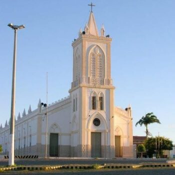

Informações técnicas sobre relevo, população, IDH etc.
| INFORMAÇÕES | |
|---|---|
| Municípios limítrofes | Norte: Tamboril e Monsenhor Tabosa, Leste: Boa Viagem, Pedra Branca e Tauá, Sul: Tauá, Oeste: Quiterianópolis, Novo Oriente e Crateús |
| Fundação | 24 de julho de 1857 (163 anos) |
| Área total | 3.222,381 km² |
| Clima | Tropical quente semiárido |
| IDH | 0,632 |
| PIB | R$ 8.950,81 |
| INFORMAÇÕES TERRITORIAIS | |
|---|---|
| Número de habitantes | 26 178 habitantes |
| Superfície de Independência |
321 866 hectares
3218,66 km² |
| Densidade populacional | 8,1 ha./km² |
| Altitude de Independência | 325 metros de altitude |
| Coordenadas geográficas decimais |
Latitude:
-5.39262
Longitude: -40.2996 |
| Coordenadas geográficas sexagesimais | Latitude: 5° 23' 33'' Sul , Longitude: 40° 17' 59'' Oeste |
| INFORMAÇÕES DO MUNICÍPIO | |
|---|---|
| Endereço da Prefeitura Municipal de Independência |
Independência
Prefeitura de Independência
Rua do Cruzeiro, N°244 - Centro Independência - CE, 63640-000 Brasil |
| Telefone da prefeitura |
(88) 3675-1308
Internacional: +55 88 3675-1308 |
| Fax |
(88) 3675-1377
Internacional: +55 88 3675-1377 |
| Endereço electrónicoda prefeitura |
gabinete@independencia.ce.gov.b
|
| Site oficial do município | independência.ce.gov.br |
| INFORMAÇÕES DO ADMINISTRATIVAS | ||
|---|---|---|
| Prefeito de Independência | JOSÉ VALDI COUTINHO | |
| Partido politico | PSD | |
| INFORMAÇÕES DE TRANSPORTE | |
|---|---|
| Transporte urbano disponível | - |
| Aeroporto |
Aeroporto de Sobral
190.5 km
Aeroporto de Picos
230 km
Aeroporto Regional do Cariri
233 km
|
| INFORMAÇÕES DE DISTÂNCIA A OUTRAS CIDADES | ||
|---|---|---|
| São Paulo : 2132 km | Rio de Janeiro : 1974 km | Brasília : 1425 km |
| Salvador : 866 km | Curitiba : 2427 km | Belo Horizonte : 1654 km |
| Manaus : 2204 km | Fortaleza : 270 km mais perto | Recife : 668 km |
| Goiânia : 1591 km | Belém : 1011 km | Porto Alegre : 2973 km |
| Guarulhos : 2112 km | Campinas : 2081 km | São Luís : 547 km |
| Distância calculada em linha reta! | ||
Conheça mais sobre a história de Independência.
Independência faz parte do Vale de Crateús, comprado em 1721, por D. Ávila Pereira Passos, pelo preço de quatro mil cruzados. A posse dessas terras lhe foi dada na Fazenda Lagoa das Almas, 18 quilômetros ao sudoeste da Vila Príncipe Imperial, hoje cidade de Crateús, na margem esquerda do Riacho do Gado, que deságua no Rio Poty.
Nos últimos anos do século XVIII, o missionário Frei Vidal da Penha, de crônica famosa, andava pelos sertões mais afastados. Seu verdadeiro nome era Vitale da Frascarolo, um frade capuchinho, que também é citado como Frei Vidal de Fraccardo. O nome Penha é em alusão ao convento de Nossa Senhora da Penha, localizado em Recife no estado de Pernambuco, onde o mesmo vivia antes das suas missões. Italiano que peregrinava pelos sertões de Pernambuco e Ceará, tinha como marca registrada a catequese dos habitantes e índios da região. Era seu costume mandar construir, por onde passava, igrejas e cruzeiros, muitos deles foram marcos para o começo de formações de povoados e futuras cidades, como exemplo a cidade de Itapajé e Bela Cruz no Ceará. Há registro de sua passagem por várias regiões do Ceará. Também ficou famoso por suas profecias catastróficas de fim do mundo, que por muitos anos permaneceram no imaginário da população local, que acreditava em suas palavras, e propagavam seus relatos.
Um fato peculiar de suas profecias lendárias é que ele sempre mencionava "o rabo baleia" ou "a baleia adormecida", animal que segundo ele, vivia adormecido sob as cidades da região. Segundo ele, ao se acordar e se mover nas entranhas da terra, a "baleia" provocaria grande devastação. Outra lenda, que ele teria contado foi na cidade de Santana do Acaraú, afirmou que a mesma e outras cidades vizinhas seriam inundadas por arrombamento de um açude pelo movimento do lendário mamífero adormecido nas entranhas da terra, previa ainda que esse açude seria construído no Rio Acaraú, afirmando ainda que o açude teria nome de um pássaro. Lenda ou não o açude realmente fora construído, o Açude Araras, e nos últimos anos diversas cidades da Região Norte do Ceará, próximas a Sobral sofreram abalos sísmicos
Por onde passava, a multidão ouvia-o enternecida à sua palavra de ouro e fé. Ao longo do vale de Crateús, certo dia, manhã clara de sol intenso, Frei Vidal bate a porta da casa grande do fazendão do Coronel José Ferreira de Melo, onde foi recebido alegremente. Era uma honra hospedar a figura singular e marcante do notável missionário. Anunciada a prédica, juntou-se uma multidão de gente, vinda de toda parte. Foi nesta oportunidade que Frei Vidal, fez veemente um apelo ao rico fazendeiro, no sentido de que mandasse construir uma capela. Homens daqueles tempos idos e vividos, não faltavam com a palavra, promessa feita, promessa cumprida.
O sertanejo acedeu, dando início às obras, que foram concluídas em 1810. Dia vai e dia vem, foi-se chegando gente e principiou um modesto arruado, em forma de quatro, ao redor da capela de Nossa Senhora Santana. A florescente povoação elevou-se a distrito de Paz com o nome de Pelo Sinal, por resolução n.º 56 de 6 de setembro de 1836.
A criação da freguesia foi em 15 de setembro de 1853 (Decreto Providencial nº 356), sendo seu primeiro vigário o Padre Antônio Ricardo Cavalcante de Albuquerque, natural de Pernambuco, cuja frente se manteve vinte anos. Pertencia a freguesia de Senhora Santana de Independência, ao bispado do Maranhão, do qual fazia parte do território da Província do Piauí. Em princípios de 1857, os habitantes da povoação Pelo Sinal reclamavam da situação inferior de dependentes da Vila Príncipe Imperial (Crateús), que muito obstava o desenvolvimento, exigindo a urgente criação do município. Suas súplicas mereceram acolhidas e, em Oeiras, capital da Província do Piauí, a 24 de julho do mesmo ano, foi expedido o Decreto nº 436, criando (pela 1ª vez) o município, com sede no antigo povoado de Pelo Sinal, elevado a categoria de Vila com território desmembrado do município de Príncipe Imperial (Crateús) e a denominação de Independência, sendo instalada a 1 de março de 1858. Por Lei Geral n.º 3.012, data de 22 de outubro de 1880, foi desanexado do Piauí e incorporado à Província do Ceará.
A Lei Estadual n.º 107, de 20 de setembro de 1893, suprimiu o município que foi restaurado pela Lei n.º 294, de 7 de agosto de 1896, cuja reinstalação ocorreu somente em 16 de novembro do mesmo ano. O Decreto Estadual n.º 193, de 20 de maio de 1931, extingue vários municípios do Ceará, dentre eles Independência, que pela segunda vez perdia sua autonomia, reconquistando-a somente a 4 de dezembro de 1933 (data da última emancipação política que perdura até os dias de hoje), pelo Decreto n.º 1.156, do Interventor Roberto Carneiro de Mendonça, o município figurando na divisão administrativa daquele ano, apresentava-se com os distritos de Independência, Novo Oriente, Santa Quitéria (atual município de Quiterianópolis) e Vertentes. Com uma área de 5.908 km² (dados da época) Independência torna-se o maior município em área territorial do estado do Ceará.
No anexo ao Decreto-Lei estadual nº 169, de 31 de março de 1938, que alterou a divisão territorial de 1936-1937, é criado o distrito de Bom Princípio, em Independência. O Decreto-Lei nº 448, de 20 de dezembro de 1938, que dispôs sobre a divisão territorial a vigorar no quinquênio 1939-1948, alterou a denominação do distrito de Santa Quitéria, que passou a denominar-se Coutinho (atual município de Quiterianópolis). Também o Decreto-Lei estadual n.º 1.114, de 30 de dezembro de 1943, que fixou a divisão territorial para o período de 1944-1948, altera outras denominações, figurando o município nesse quinquênio com os distritos de Independência, Coutinho, Ematuba (ex Bom Princípio), Iapi (ex Vertentes) e Novo Oriente, mantidos pela Lei nº 1.153, de 22 de novembro de 1951.
Em 10 de outubro de 1957 é criado o Município de Novo Oriente, desmembrando-se do Município de Independência, que perde assim parte de seu território. Suas origens, tidas como recentes, fundamenta-se no pioneirismo do Capitão Rodrigo Alves da Silva, edificador de sua própria casa de fazenda, situando-se esta nas proximidades da Lagoa do Tigre. Dessa fazenda e de posteriores agregamentos, gerou-se o arraial cuja denominação se manteve como Lagoa do Tigre. A elevação do povoado à categoria de Vila provém de Ato Governamental datado de 3 de março de 1902, e a de Município conforme Lei n.º 3.855, de 10 de outubro de 1957, tendo sido instalado a 15 de dezembro do mesmo ano. A capela e respectiva Freguesia, sobre as quais faltam registros, têm como padroeiro São Francisco de Assis, com vinculação subordinativa ao Bispado de Crateús. Em 4 de junho de 1987, publicou-se no Diário Oficial do Estado do Ceará, nº 14.587 Parte I, o ato de criação do Município de Quiterianópolis que é sancionado pelo então Governador do Ceará Tasso Ribeiro Jereissati.
Segue-se abaixo trecho do Documento (Diário Oficial) que instala o município: Art. 1º - É criado o Município de Quiterianópolis, com sede na Vila de Coutinho, que passa a denominar-se Quiterianópolis, ficando elevado a categoria de cidade. Art. 2º - O Município de Quiterianópolis constitui-se do Distrito de Quiterianópolis (ex Coutinho), Distrito de Algodões, Distrito de São Francisco e parte do Distrito de Iapi, todos desmembrados do Município de Independência, tendo os seguintes limites territoriais: Ao Norte, com o município de Novo Oriente; A Leste, o Município de Independência; Ainda a Leste, com o Município de Tauá; A Sul, com o Município de Parambu; A Oeste, com o estado do Piauí. Dados obtidos de documentos existentes na Biblioteca Pública de Independência-CE.
Saiba mais sobre os melhores lugares e o que fazer em Independência.
Fundação: 15/09/1853, Padroeira: Senhora Sant’Ana, Festa: 16 a 26/07

Veja como chegar nos melhores pontos de Independência